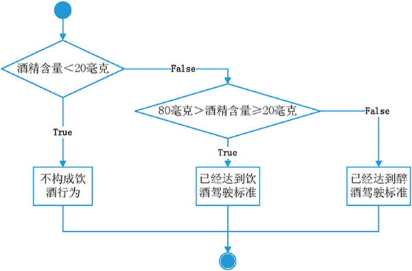
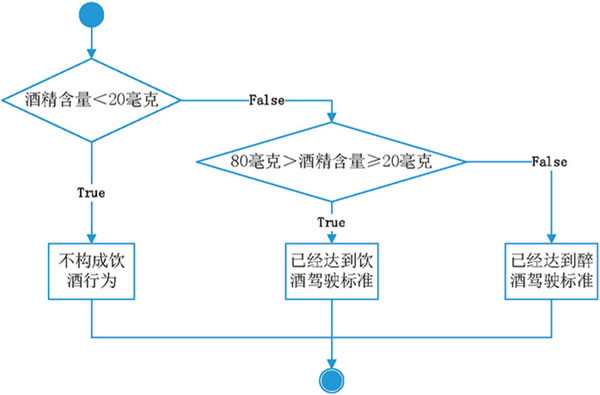

首页 > Python > Python流程控制
Python if语句嵌套（入门必读）
前面章节中，详细介绍了 3 种形式的条件语句，即 if、if else 和 if elif else，这 3 种条件语句之间可以相互嵌套。
例如，在最简单的 if 语句中嵌套 if else 语句，形式如下：
【实例】判断是否为酒后驾车
如果规定，车辆驾驶员的血液酒精含量小于 20mg/100ml 不构成酒驾；酒精含量大于或等于 20mg/100ml 为酒驾；酒精含量大于或等于 80mg/100ml 为醉驾。先编写 Python 程序判断是否为酒后驾车。
通过梳理思路，是否构成酒驾的界限值为 20mg/100ml；而在已确定为酒驾的范围（大于20mg/100ml）中，是否构成醉驾的界限值为 80mg/100ml，整个代码执行流程应如图 1 所示。

图 1 执行流程示意图
由此，我们可以使用两个 if else 语句嵌套来实现：
除此之外，if分支结构中还可以嵌套循环结构，同样，循环结构中也可以嵌套分支结构。不过，由于目前尚未系统学习循环结构，因此这部分知识会放到后续章节中作详细讲解。
例如，在最简单的 if 语句中嵌套 if else 语句，形式如下：
if 表达式 1：
if 表示式 2：
代码块 1
else：
代码块 2
if 表示式 1：
if 表达式 2：
代码块 1
else：
代码块 2
else：
if 表达式 3：
代码块 3
else：
代码块 4
【实例】判断是否为酒后驾车
如果规定，车辆驾驶员的血液酒精含量小于 20mg/100ml 不构成酒驾；酒精含量大于或等于 20mg/100ml 为酒驾；酒精含量大于或等于 80mg/100ml 为醉驾。先编写 Python 程序判断是否为酒后驾车。
通过梳理思路，是否构成酒驾的界限值为 20mg/100ml；而在已确定为酒驾的范围（大于20mg/100ml）中，是否构成醉驾的界限值为 80mg/100ml，整个代码执行流程应如图 1 所示。

图 1 执行流程示意图
由此，我们可以使用两个 if else 语句嵌套来实现：
proof = int(input("输入驾驶员每 100ml 血液酒精的含量："))
if proof < 20:
print("驾驶员不构成酒驾")
else:
if proof < 80:
print("驾驶员已构成酒驾")
else:
print("驾驶员已构成醉驾")
运行结果为：
输入驾驶员每 100ml 血液酒精的含量：10
驾驶员不构成酒驾
除此之外，if分支结构中还可以嵌套循环结构，同样，循环结构中也可以嵌套分支结构。不过，由于目前尚未系统学习循环结构，因此这部分知识会放到后续章节中作详细讲解。
关注公众号「站长严长生」，在手机上阅读所有教程，随时随地都能学习。内含一款搜索神器，免费下载全网书籍和视频。

微信扫码关注公众号